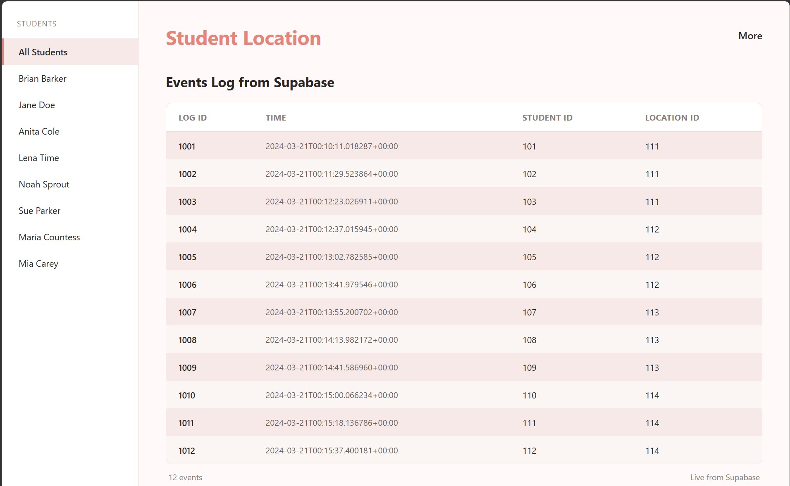

Maryam Shah.
Computer science student drawn to the invisible side of technology — backend architecture, network systems and secure, scalable cloud.
A short introduction
I'm a Computing with Cloud Computing student at TU Dublin (Class of 2028) with a deep fascination for the "invisible" side of technology.
My foundation is built on HTML, CSS, JavaScript and Python, but my real interest lies in the complexity of backend architecture and how robust network systems support the modern web.
Right now I'm exploring the intersection of Generative AI and Cybersecurity — keen to understand how emerging AI models can be built into secure, scalable cloud environments. I'm a lifelong learner looking to bridge the gap between basic data filtering and enterprise-level software infrastructure.
- Based in
- Dublin, Ireland
- Focus
- Cloud & backend
- Studying
- BSc Computer Science
- Status
- Open to internships
Where I've worked
Sales Associate
Managed cash handling and stock control to ensure efficient store operations. Introducing customers to new stock and Introduce them to new fashion statements
Sales Consultant
Customer-facing sales role advising on eir's products and services.
Sales Associate
Managed cash handling and stock control to ensure efficient store operations.
Sales Associate
Managed fitting rooms and kept the sales floor tidy to enhance the customer experience.
Crew Member
Delivered exceptional customer service at the drive-through, ensuring accurate, fast orders.
Things I've built

Student Location
A web application built during my course. Code is on GitHub — The Student Location project is a full-stack web application developed to manage and display student location data in an intuitive and responsive interface. The application is built using Svelte and JavaScript on the front end, with Supabase used for backend services including data storage and retrieval. Technologies used: .
TrackPAd
Working on a new Website that is TrackPad. It is a personal tracker built with Next.js and TypeScript that unifies a working student's university timetable, work shifts, and exam deadlines with automatic clash detection, plus a payslip scanner that parses uploaded PDFs to track income, tax bracket, and annual leave in real time.. to help with budgeting
Tools & interests
Languages & foundations
Exploring
Background
Technological University Dublin
Introduction to IoT
Get in touch
Open to internships & opportunities.
Say hello